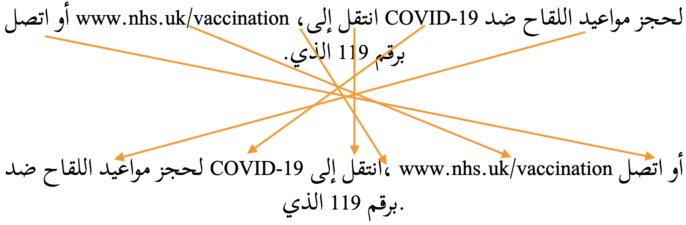
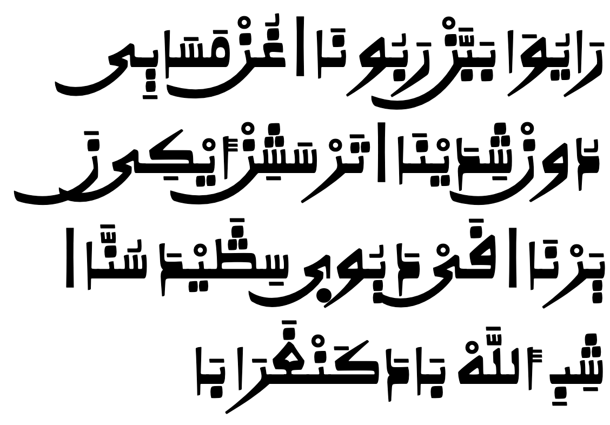
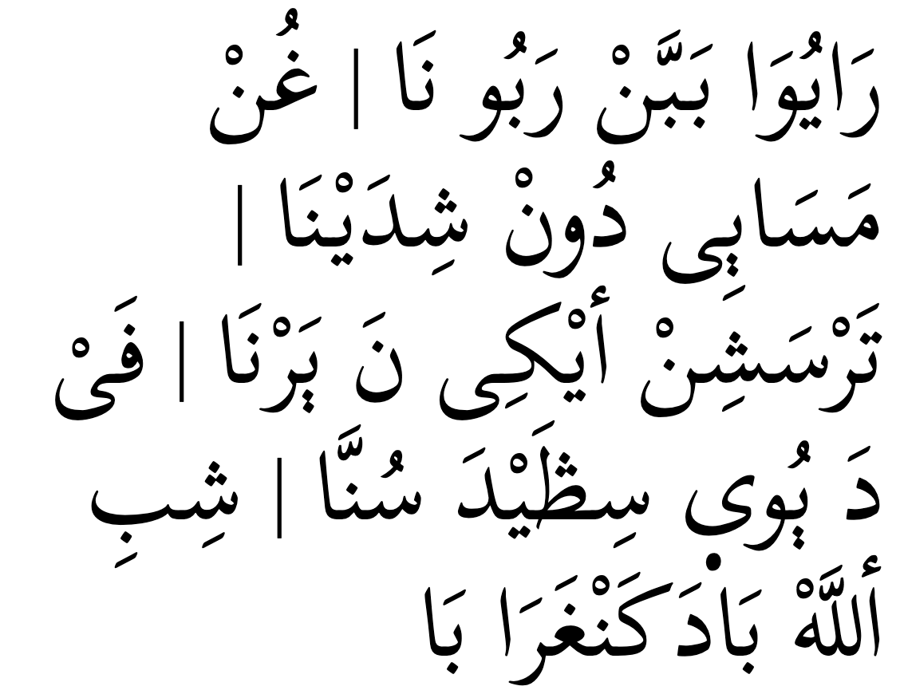

This page brings together basic information about the Arabic script and its use for the Hausa language. It aims to provide a brief, descriptive summary of the modern, printed orthography and typographic features, and to advise how to write Hausa using Unicode.
Hausa has a long tradition of writing in the Arabic script, however various styles have been developed. Two major orthographies are Warsh (a north African variant), and Hafs (much closer to the Arabic used in Egypt and the Gulf). Additionally, the Qur'an and other religious materials are written in Arabic, using the standard Arabic spellings, and these spellings often carry over to the many Arabic loan words in Hausa. On top of that, spelling is not standardised, and is often idiosynchratic to a given author.
Here we focus on the Warsh orthography used for Hausa, and with the Kano styling, although references are made from time to time to the Hafs spelling. Comprehensive sources are difficult to find, so this information reflects what information was found.
Note: Due to the difficulty in finding lists of Hausa words written in ajami that are associated with pronunciation information, most of the examples shown here are transcribed from terms in the Latin Boko orthography. It may be possible to find alternative spellings of such examples.
Hausa can be written in the Latin script, but also (less commonly) using the Arabic ajami script. Use of ajami tends to be restricted to Muslim contexts.
There is a good deal of variation in the orthography for Hausa ajami, and no official standardisation. It should be borne in mind that while this page adopts a particular set of characters based on the Warsh variants as most representative of the orthography, and describes alternative characters under the label of 'infrequent', this is not necessarily representative of the orthography used in certain regions or contexts, especially outside the area around northern Nigeria.
For information about the script in general, see the Arabic overview.u
Orthographic development & variants
Hausa has been written in ajami since at least the early 17th century.whl
There is no standard system of using ajami for Hausa, and different writers may use letters with different values.whl
There are or have been a number of variant practices for writing Hausa ajami. There are also some confusable characters. They include the following:
There is some variation in sources about the use of ی versus ي. Most sources seem to agree, however, that the iː uses ى, whereas the end of a diphthong or the consonant j uses one of the former. However, some sources show YEH instead of FARSI YEH for medial forms. They only differ in that the isolate and final forms of FARSI YEH have no dots, ie.
ییی
vs.
ييي
Unicode policy for the Arabic script is to encode fully precomposed characters rather than to use combining characters for ijam. Therefore, it is inappropriate to use 06DB (wagaf) to create characters such as ڟ, even though the Hausa consider the wagaf to be a modifier letter rather than part of the base character.lpp
The wagaf may appear above or below the base, but Unicode standardises on above.
The characters with wagaf that are based on characters with a dot above the base retain that dot as well as the three dots of the wagaf. For example, ࣃ is completely different from the character
ڠU+06A0 ARABIC LETTER AIN WITH THREE DOTS ABOVE,
even though the difference is visually subtle.
The difference between ن and ࢽ comes down to the absence of dots associated with a character in final position, ie.
ن ننن
vs.
ࢽ ࢽࢽࢽ In medial position, the two contrasting characters look identical.
In some fonts, ك and ک are rendered identically in the Kano style.
The Hausa ajami orthography is an alphabet, ie. all vowels are written explicitly, alongside consonants; there is no inherent vowel in a consonant (abugidas), certain vowels are not systematically dropped (abjads), and consonant and vowel are not combined in the same character (syllabaries).
The Arabic script is commonly used as an abjad, which means that in normal use the script represents only consonant and long vowel sounds. Unlike Semitic languages such as Arabic, which are based on consonant patterns, it can be difficult to read Hausa text without the full vowel information, and therefore Hausa retains all vowel diacritics in the text. Hausa has more vowel sounds than Arabic, so additional diacritics are used to write those. Since Hausa ajami normally shows all the vowel diacritics, it actually functions as an alphabet.
Hausa uses two principal types of writing: Hafs (Ḥafṣ) orthography uses characters that look and behave more like Standard Arabic, whereas the Warsh (Warš) orthography changes the shape of some letters, and drops the dots associated with others in certain positions. Typical visual differences between the Warsh and Hafs orthographies relate to the absence of dots in some positions, and the placement of dots relative to the base. These differences are produced by using different code points.
The Warsh orthography is typically written using a particularly African font style called Kano.
Hausa has more vowel sounds than Arabic, so some additional conventions are necessary to cover those. Mostly these adaptations follow the North African, magrebi approach.
Vowels Vowels are written using 7 combining marks, and 7 letters, only 1 of which is a dedicated vowel letter. The way a given vowel is written depends on its joining behaviour (initial, medial, or final). In some cases a vowel is written using just a diacritic, in others it is via combinations of letters and diacritics. Most of the letters also double as consonants.
Standalone vowels are preceded by a glottal stop, and word-initially are always based on a carrier.
Consonants The Warsh orthography for Hausa has 26 basic consonant letters, including 3 used to express labialised and palatalised consonants. The usage of these 3 is not fully standardised. 15 more consonants are available in the extended repertoire.
A mandatory ligature is used for combinations of lam + alif.
The diacritic 0651 indicates gemination in vowelled text.
Vowel absenceVowel absence is indicated using the diacritic 0652.
Layout Hausa is written right to left in horizontal lines, but numbers and embedded Latin text are read left-to-right. Words are separated by spaces. There is no case distinction.
Letters are joined (cursive) as is usual for the Arabic script.
Hausa uses a mixture of punctuation from the ASCII, Arabic and other ranges
Joining forms
Because the Arabic script is 'cursive' (ie. joined-up) writing, letters tend to have different shapes depending on whether they join with adjacent letters or not (see cursive). In addition, vowels can be represented using different characters, depending on where in a word they appear.
In scripts such as Arabic, several characters have no left-joining form. In what follows we'll use the characters ي and د to illustrate shapes. The former can join on both sides, but the latter can only join on the right.
Left-joining glyphs are commonly called initial; dual-joining are called medial; and right-joining are called final. Glyphs that don't join on either side are called isolated. However, these glyph shapes can be found in various places within a single word.
Word-initial characters usually have initial glyph shapes (eg. 064A ). However, characters that only join to the right will use an isolated glyph shape (eg. 062F ).
Furthermore, words beginning with a vowel are always preceded by a vowel carrier, which is normally ا
(eg. 0627 06CC or 0627 064E ).
Word-medial characters will typically join on both sides
(eg. 064A ) but those that only join to the right will use a final glyph (eg. 062F ).
However, if either of those is preceded by another character that only joins to the right, the glyph shapes rendered will be initial (eg. 064A )
and isolated (eg. 062F ), respectively.
Word-final characters will typically use a final glyph shape (eg. 064A and 062F ).
However, if the previous character joins only to the right, they will use isolated glyph shapes (eg.064A and 062F ).
In all this contextual glyph shaping the basic shapes used for a character can vary significantly in a script like Arabic. This also includes some characters that only have ijam dots in certain contexts.
These are sounds for the Hausa language, with emphasis on usage in Kano.
Click on the sounds to reveal locations in this document where they are mentioned.
Phones in a lighter colour are non-native or allophones.
Vowel sounds
Plain vowels
Hausa has 5 basic vowel sounds, which are contrastive in length, making 10 phonemes in total.
The sounds i and u are commonly articulated more like ɪ or ɨ, and ʊ or ʉ, respectively. The phoneme a is typically pronounced fairly centrally, like ɐ ; the IPA Handbook transcribes it for Kano as ə, but intends that to be an unspecific range of pronunciation in the low to mid area.ipa§90
Complex vowels
iu
ui
aɪaʊ
Consonant sounds
labial
alveolar
post-
alveolar
retroflex
palatal
velar
ejective
glottal
stop
pb ɓ
td ɗ
kɡ kʷɡʷ kʲgʲ
kʼ kʷʼ kʲʼ
ʔ ʔʲ
affricate
t͡sʼ
t͡ʃd͡ʒt͡ʃʼ
fricative
ɸ f
sz sʼ
ʃ
h
nasal
m
n
ŋ
approximant
w
l
j
trill/flap
ɾ
ɽ
The phoneme t͡sʼ occurs in Kano dialect, but in some other dialects this becomes sʼ.
Some non-Kano dialects also have the ejective t͡ʃʼ.
ʔʲ is a palatalised glottal stop. (Some sources describe this as a semi-vowel approximant with creaky voice (laryngealisation) and transcribe it as j̰.) It is not used in many words, but many of those words are very common, such as ʔʲaʔʲachildren.
The only contrastive nasals are m and n, but ŋ also occurs allophonically.
The sounds f and p are allophones of ɸ, and other dialects have hʷ.
Tone
Hausa is a tonal language. Each of its five vowels may have low tone, high tone or falling tone.whl The high tone is typically unmarked in transcription.
IPA
Name
Accent
Example
˥˥
High
é
ɽu˥.wa:˥water
˩
Low
è
ɸu˩.ɽe:˥flower
˥˩
Falling
ê
kun˥˩.ne:˥ear
Structure
Hausa has 3 syllable types: CV, CVV, and CVC, where VV can be a long vowel or a diphthong.bc The long vs. short vowel distinction is phonemically important, however when a syllable with a long vowel acquires and final consonant, the vowel is shortened.
Consonant clusters may occur where syllables are side by side, but not within a syllable. Gemination is, however, a distinctive feature.bc
Semivowels ʷ and ʲ may occur after an initial consonant. The full range of plain, palatalised, and labialised velars (eg. k, kʲ, or kʷ) only occur contrastively before the vowel a. Before front vowels (eg. i), only palatalised and labialised velars occur. Before rounded vowels, only labialised velars occur.whl
Vowels
iإِ◌ِ◌ِ iːىِٕ◌ِى◌ِى
uعُ◌ُ◌ُ uːعُو◌ُو◌ُو
eعٜ◌ٜ◌ٜ eːىٰٜ◌ٜىٰ◌ٜىٰ
oعُ◌ُ◌ُ oːعُو◌ُو◌ُواْ
aأَ◌َ◌َ aː?◌َا◌َا
aj
aw
◌َیْ◌َیْ
◌َوْ◌َوْ
Basic Hausa vowels.
Each table cell shows word-initial, word-medial, and word-final forms from right to left. The glyphs shown are illustrative; alternative shapes may occur (see joining_forms). Click/tap on items to see a list of the components for that cell.
In word-initial position vowels are usually attached to a consonant letter representing a glottal stop. It is shown here because it acts as a vowel carrier (see standalone). Otherwise, unlike orthographies for languages such as Arabic and Urdu, the characters used to represent a vowel are normally the same, regardless of the position within a word. The exception is the word-final oː, which breaks the regular pattern by adding an alef with sukun.
Observation: Need to check whether initial iː is written
ىِٕ
or whether it should be
إِى.
Same for eː.
Observation: It appears to be very unusual for sounds other than a or i to appear at the start of a word.
Observation: It is very difficult to find information in the sources consulted, but my conclusion is that what would be an initial form of a vowel letter in Standard Arabic is normally written in Hausa by combining the usual vowel diacritic with a carrier, such as أ [U+0623 ARABIC LETTER ALEF WITH HAMZA ABOVE] or ع [U+0639 ARABIC LETTER AIN]. Where i don't have other information, these 'initial' forms are shown using AIN in the table.
Note the use of ى and ی, rather than ي.
Post-consonant vowels
Vowels following consonants are written using a mixture of combining marks and letters. Vowel diacritics are not hidden.
Hausa has 10 vowel phonemes; length is distinctive, and the 5 basic sounds have both short and long variants. Unlike the Latin orthography, this Arabic script orthography has different short and long vowel spellings. Neither orthography, however, indicates tone.
The way a given vowel is written depends on its joining behaviour (initial, medial, or final). In some cases a vowel is written using just a diacritic, in others it is via combinations of letters and diacritics. Most of the letters also double as consonants. 7 combining marks are used to write vowels, and 7 letters, only 1 of which is a dedicated vowel letter.
Plain vowels
The various ways of writing the sounds are shown in the table at the start of this section. Post-consonant vowels are repeated here, in a slightly different arrangement.
medial
◌ِ,◌ِى,◌ُ,◌ُو,◌ٜ,◌ٜىٰ,◌ُ,◌ُو,◌َ,◌َا
final
◌ِ,◌ِى,◌ُ,◌ُو,◌ٜ,◌ٜىٰ,◌ُ,◌ُواْ,◌َ,◌َا
Diphthongs
The Hausa diphthongs, iu, ui, ai, au all end in either -i or -u. Those sounds are written using a consonant with 0652 above, to indicate that there is no following vowel.
یْ,وْ
Diphthongs ending with -i follow the initial vowel diacritic with یْ. Note that this is notى (which indicates long vowels). Two dots below are visible in medial position but not at the end of a word.
cf.
حَیْرَࢽْ
حَࢽْحَیْ
Diphthongs ending with -u follow the initial vowel diacritic with وْ.
eg.
حَوْسَا
Vowel length
Long vowels are indicated using one of 0627, 0648, or 0649 after the vowel diacritic. See fig_vowelgrid.
Long vowel oː appears to also add اْ in final position, which is the only time it is distinguished from uː.
eg.
ࢽُوࢽُواْ
Nasalisation
Nasalisation is indicated by a syllable-final -n in the Latin orthography. There is a report that the tanwin diacritics are used for this in the ajami orthography, but this needs to be confirmed.
Standalone vowels
All Hausa vowels are preceded by a consonant. In the case of vowels we refer to here as 'standalone', that consonant is a glottal stop.
Word-initial standalone vowels are written using one of the following consonants as a vowel carrier.
The following list contains information gleaned from the sources, but more information is needed.
إِ,ىِٕ,عُ,عُو,عٜ,ىٰٜ,عُ,عُو,أَ
These letters are followed by the relevant vowel characters, as shown in fig_vowelgrid.
eg.
أَغَدٜ
إِسْکَا
Observation: Things to check:
Is iː written
ىِٕ
or
إِى.
Same for eː.
How is ʔaːwritten?
Do word-internal standalones use AIN?
Vowel composition
This section describes various vowel components and behaviours associated with this orthography.
Combining marks used for vowels
Hausa uses the following combining characters for vowels.
َ,ُ,ِ,ْ,ٕ,ٔ,ٜ,ٰ
0670 is never used alone, and is one of 2 diacritics used to write eː.
The diacritics 0654 and 0655 are only used where إ and أ are decomposed, which is rare.
0652 is used to indicate that no vowel follows the consonant over which it is placed. It is also used to signal diphthongs (see diphthongV).
Alef maksura
ى
ى is the only dedicated letter used for writing vowels in Hausa, and it is used in combinations that represent the long vowels iː and eː.
Hausa uses the following consonant characters to write long vowels in combination with diacritics.
ا,و,ی
In a standard Arabic orthography these characters would be regarded as matres lectionis, but since Hausa shows all vowel diacritics they don't have the same role here. Instead, they form part of a composite that distinguishes one vowel from another (see compositeV).
أ,إ,ع
The letters just above are used as vowel carriers (see standalone) and represent the glottal stop. In general, that makes them ordinary consonants. However, given that the first 2 appear only as carriers of vowels in word-initial position, it could perhaps be argued that they are part of a multipart vowel arrangement along with the following diacritic(s).
Composite vowel signs
The 5 composite vowel signs listed here all indicate long versions of the vowels. The vowel diacritic is followed by a letter (and in 2 cases, additional characters). Diphthongs and glides are not included here, and nor are word-initial clusters.
Click on the letters for examples.
ِى,ُو,ٜىٰ,ُواْ,َا
Tones
Although Hausa is a tonal language, the tone values are not written in ajami.
Vowel sounds to characters
This section maps Hausa vowel sounds to common graphemes in the ajami orthography.
The joining forms shown are illustrative; alternative shapes may occur (see joining_forms).
Plain vowels
i~ɪ~ɨ
initial0625 0650eg. إِسْکَا
medial0650eg. بِکَا
final0650eg. ثُوثِ
iː
initial0649 0650 0655
medial0650 0649eg. أَدِّىࢽِى
final0650 0649eg. جِࢽِى
u~ʊ~ʉ
initial0639 064F
medial064Feg. حُطُ
final064Feg. تٜىٰکُ
uː
initial0639 064F 0648
medial064F 0648eg. سُوࢽَا
final064F 0648eg. حُوتُو
e
initial0639 065C
medial065Ceg. ࢻٜسْ
final065Ceg. حَرْشٜ
eː
initial0649 0670 065C
Omniglot shows the following for eː: ـٰٕ/ىٰٕ
medial065C 0649 0670eg. تٜىٰکُ
final065C 0649 0670eg. ࢻُرٜىٰ
o
initial0639 064FSame as u.
medial064FSame as u, eg. دُکْتَا
final064FSame as u.
oː
initial0639 064F 0648Same as uː.
medial064F 0648Same as uː, eg. مُوتَا
final064F 0648 0627 652Different from uː! lppuwa Eg. زُومُواْ
a~ɐ~ə
initial0623 064Eeg. أَغَدٜ
medial064Eeg. إِدَࢽْ
final064Eeg. بَبَّ
aː
final064E 0627eg. دَاغَا
Diphthongs
aj
initial0623 064E 06CC 0652eg. أَیْکِى
medial064E 06CC 0652eg. سَیْوَا
final064E 06CC 0652
aw
medial064E 0648 0652eg. حَوْسَا
final064E 0648 0652
Vowel absence
Vowel absence principally occurs either when a consonant is a syllable coda, or when a consonant is part of a consonant cluster.
Vowel absence is usually marked (unlike Standard Arabic), including word-finally, and over the YEH or WAW that signal the final part of a diphthong. ْ over a consonant indicates that there is no following vowel.
eg.
حَیْرَࢽْ
حَیْ,رَ,ࢽْ
Consonant clusters are not particularly common, but they are also written by adding ْ over the non-final consonant sounds.
eg.
حَࢽْتَا
حَ,ࢽْ,تَا
إِسْکَا
إِ,سْ,کَا
Consonants
Warsh, native Fulfulde
Hafs & other
ب,ݑ,ت,ث,د,ج,ط,ک,ࢼ,غ,ع
ٻ,پ,د,ك,ق,ك
ݣ,ݣ,ࣄ,ࣄ,ࣃ,ࣃ,ۑ
ؿ
ࢻ,س,ڟ,ز,ش,ج,ح,ه
ف,پ,ص,ذ,ظ
م,ࢽ
ن
و,ر,ر,ل,ی
ض
The right-hand column shows additional characters that may be used to write Hausa ajami, including some used for the Hafs orthography, and others used in borrowed words, or text written by speakers who don't make the phonemic distinctions in the table. They are not used for the Warsh orthography.
There is no official standard for how to write African languages in ajami, and there has been a good deal of variation over the history of the writing.dbs In addition, dialects of Hausa have different phonemic repertoires, which are reflected in their writing. So there is some variation as to which characters are mapped to which sounds, and the sets described here are a synthesis of sources describing modern usage.
The typical orthography is based on Warsh (Warš) forms, which incorporate Maghribi characteristics, and are often written with Kano style glyphs (as here). Some sources describe an alternative Hafs (Ḥafṣ) orthography, used with hand-written adaptations for the newspaper Al-Fijir.
Additional alternative shapes also occur, typically used for borrowed words, or because sounds are not differentiated in some regions. (Warren-Rothlinaww lists a handful of other, less commonly attested shapes, but they are not listed here.)
Basic set (Warsh orthography)
The following panel covers the basic set of consonant phonemes used for the Warsh orthography.
Click on each letter for more details and for examples of usage, especially where more than one phonological transcription appears.
SIL's Alkalami font descriptionSIL: Alkalami Font Features§https://software.sil.org/alkalami/features/ includes a character used for ng which hasn't appeared in other resources. It is represented using 0763.
Three consonant sounds in syllable initial position can be labialised ʷ or palatalised ʲ. They depend on an initial base consonant with a 3-dot diacritic, which may or may not be followed by و or ی.
One base character was encoded in Unicode 4.1: ݣ, and is used for kʷ, kʲ. Unicode code points for the other two were encoded in Unicode v13. They are ࣃ for ɡʷ, ɡʲ and ࣄ for ƙʷ, ƙʲ.
There is little information available about how these characters are used, and some ambiguity in what there is.
Warren-Rothlinaww says the following about these characters.
The labialized and palatalized velars /ɡʷ/ and /ɡʲ/, /kʷ/ and /kʲ/, and /ƙʷ/ and /ƙʲ/ are usually not written, e.g. کْي ⟨k⁰y⟩ and کْو⟨k⁰w⟩, as one might expect, but کِي ⟨kiy⟩ or کُو ⟨kuw⟩, and even with the following vowel sound intervening (e.g. کَو⟨kaw⟩ for /kwa/). As noted above for other distinctive Hausa sounds, three dots usually smaller than standard nuqaṭ may be added above for labialization and below for palatalization (e.g. ⟨k₃aw⁰taʾ⟩ kyauta).
Rather than provide characters with triple dots above and others with triple dots below, Unicode standardised on above only.
Observation: Looking at the samples in the Unicode proposallpp, there seem to be two different forms for each. It isn't clearly indicated (especially since the boko transcription doesn't indicate vowel length, and because some of the transcriptions seem dubious), but I find myself wondering whether they reflect the difference between long and short vowels. Here are some examples. Compare the left and right items for each pair.
cf.
ࣃُودَ
ࣃُو,دَ
ࣃُمْࢽَ
ࣃُ,مْ,ࢽَ
cf.
ࣄُورَیْ
ࣄُو,رَ,یْ
ࣄُثٜىٰ
ࣄُ,ثٜ,ىٰ
cf.
ࣄُیَا
ࣄُ,یَا
ࣄَالّٜىٰ
ࣄَا,لّٜىٰ
Universität Wien's document also shows it being used alone.
eg.
ݣَاشٜىٰ
See a list of words (in the Boko orthography) using ʷ or using ʲ.
Other consonants
The following are additional characters that may be used to write Hausa ajami, including some used for the Hafs orthography, and others used in borrowed words, or text written by speakers who don't make the phonemic distinctions in the table above.
ك,ٻ,ق,ف,پ,ص,ذ,ظ,ه,ن,ض,ؿ
ب, د, and ک may be used for glottalised sounds as well as normal sounds.
Dot variants
A typical feature of the Warsh orthography is that a character has dots in initial or medial positions, but none in final or isolate. Another is that the dots appear on the other side of the base in some characters from the side they would appear in the Hafs orthography. These differences are represented in Unicode by the use of different characters. They include the following.
ࢻ differs from ف in two respects: it has no dot for the isolate and final positions, and when it does have a dot it appears below the base, eg. compareف فففࢻ ࢻࢻࢻ
ࢼ differs from ق in the same way for isolate and final positions, eg. compareق قققࢼ ࢼࢼࢼ
The same applies to ࢽ and ن, eg. compareن نننࢽ ࢽࢽࢽ
Consonant length
ّ
Geminated consonants are indicated using 0651.
eg.
بَبَّ
أَدِّىࢽِى
Consonant sounds to characters
This section maps Hausa consonant sounds to common graphemes in the ajami orthography.
The right-hand column shows the various joining forms.
Sounds listed as 'infrequent' are allophones, or sounds used for foreign words, etc. Light coloured characters occur infrequently.
b
0628062806280628plosive/implosiveب
ɓ
According to Evans & Warren-Rothlinlpp and SILSIL: Alkalami Font Features§https://software.sil.org/alkalami/features/, 0751 is the Warsh character, and they assign to the Hafs style the character that most sources associate this sound, which is 067B. Bondarevdbs says that it is written as 067E in modern text. One of the 'alternate' shapes used for this sound is 0628.
0751075107510751ݑWarsh orthography (?)
067B067B067B067BٻHafs orthography (?)
067E067E067E067EپAlternative.
t
062A062A062A062Aت
t͡ʃ
062B062B062B062Bث
d
062F062Fد
d͡ʒ
062C062C062C062Cج
ɗ
0637063706370637ط
062F062FدOccasional alternative.
k
06A906A906A906A9کWarsh orthography
0643064306430643كHafs/alternative orthography
kʼ
Evans & Warren-Rothlinlpp associate this sound with 08BC for the Warsh variant, as do others, but Warren-Rothlinaww lists what appears to be 06A7 for this sound (although it could be an incorrect attribution, given that the former has a dot over initial/medial forms).
08BC08BC08BC08BCࢼWarsh orthography
0642064206420642قHafs orthography
0643064306430643كOccasional alternative orthography
kʷ
0763076307630763ݣ
kʲ
0763076307630763ݣ
ƙʷ
08C408C408C408C4ࣄ
ƙʲ
08C408C408C408C4ࣄ
ɡ
063A063A063A063Aغ
ɡʷ
08C308C308C308C3ࣃ
ɡʲ
08C308C308C308C3ࣃ
ʔ
0639063906390639ع
ʔʲ
Warren-Rothlinaww indicates that this uses 06D1 for the Warsh orthography, rather than the 063F indicated by Evans & Warren-Rothlinlpp and SILSIL: Alkalami Font Features§https://software.sil.org/alkalami/features/. The IPA notation for this sound is somewhat ambiguous, including ƒ, ʔʲ, and j̰ .
The Warsh orthography uses 08BB for this sound, and the Hafs uses 0641. Sometimes, 067E is used as one of the 'alternative' shapes. Warren-Rothlinaww also lists what appears to be 06A2 for this sound, although it could again be an incorrect attribution, given that 08BB has a dot below initial/medial forms.
08BB08BB08BB08BBfricativeࢻWarsh orthography
0641064106410641fricativeفHafs orthography
067E067E067E067EfricativeپAlternative
s
Normally, this would be written using 0633, but 0635 is also used, mainly in Arabic loan words.aww
0633063306330633fricativeس
0635063506350635fricativeصin borrowed words.
sʼ~t͡sʼ
069F069F069F069Fejectiveڟ
z
Normally written using 0632, however there are 2 'alternate' letters.
06320632fricativeز
06300630fricativeذAlternative
0638063806380638fricativeظAlternative
ʃ
0634063406340634fricativeش
ʒ
062C062C062C062Cplosive/affricateج
h
The usual form is 062D. For Quranic names, 0647 is generally used, but both can sometimes also be used interchangeably, eg. حَوْسَا or هَوْسَا.aww
062D062D062D062Dfricativeح
0647064706470647fricativeهMostly for Quranic names.
m
0645064506450645nasalم
n
The Warsh form is 08BD and Hafs is 0646. Warren-Rothlinaww however indicates what appears to be 0646 rather than 08BD in Evans & Warren-Rothlinlpp and SILSIL: Alkalami Font Features§https://software.sil.org/alkalami/features/.
08BD08BD08BD08BDnasalࢽWarsh orthography
0646064606460646nasalنHafs orthography
w
06480648approximant/vowel lengthenerو
r
06310631trill/flapر
ɽ
06310631trill/flapر
l
0644064406440644approximantل
0636063606360636approximantضOccasional alternative
j
06CC06CC06CC06CCapproximantی
Other features
Formatting characters
The Arabic script uses a large number of Unicode characters that affect the way that other characters are rendered. Many of those have no visible form of their own.
Modern Arabic-script text makes use of a relatively large set of invisible formatting characters, especially in plain text, many of which are used to manage text direction. For more details, see the Arabic overview.
Encoding choices
In the Hausa orthography different sequences of Unicode characters may produce the same visual result. Here we look at those, and make notes on usage.
Hamza & precomposed characters
Unicode support for the various uses of the hamza is complicated.u§384 In general, the Unicode Standard recommends to use 0654 in combination with a base character. However, there are a few exceptions to consider.
Canonically-equivalent alternatives
A number of combinations with the hamza diacritic can be represented as either an atomic character or a decomposed sequence, where the parts are separated in Unicode Normalisation Form D (NFD) and recomposed in Unicode Normalisation Form C (NFC), so both approaches are canonically equivalent. These include the following:
Atomic
Decomposed
أ
0627 0654
إ
0627 0655
The single code point per vowel-sign is the form preferred by the Unicode Standard but is rarely used in Hausa text, and the decomposed form is even rarer.
Codepoint sequences
When typing and in storage, combining marks always follow the base character they are associated with.
Special rendering rules
In principle, if more than one combining mark appears on the same side of the base character, Unicode expects applications to render the marks such that those marks closer to the base character in memory appear closer to the base character when rendered. (This is called the inside-out rule.) However, due to the reordering applied by the Unicode normalisation forms, some of the Arabic script diacritics end up in an inappropriate order on display.
For example, if a user types the sequence of characters in fig_amtra, the order of the marks will be changed such that applying the inside-out rule would render the shadda above the vowel (which is incorrect). (In fact, most application renderers have special rules to correct this.)
The Unicode Standard formally addresses this anomaly in the Technical Annex Unicode® Arabic Mark Rendering (AMTRA), with a set of rules for how to render sequences of Arabic characters. The rules generally move shadda, hamza, round dots, etc. so that they are close to the base character.
User input
Post-normalisation output
بُّ
ب
ّ
ُ
بُ͏ّ
ب
ُ
ّ
A sequence of shadda and damma as the user is likely to input it (left), and how it could potentially be arranged after normalisation (right). If the AMTRA rules are applied by the application, the user should see what they expect.
In the rare exceptions where the AMTRA rules should not change the rendering, this can be achieved by placing an invisible 034F character between the combining marks. (In fact, this is what was done to simulate the incorrect appearance in fig_amtra, because otherwise the browser rendering engine would have automatically produced the same output as in the first column. Clicking on the example will show the sequence used.)
Numbers, dates, currency, etc
Need to confirm whether Hausa uses the following digit forms.
Hausa ajami text is written horizontally and right to left in the main but, as in most right-to-left scripts, numbers and embedded text in other scripts are written left to right (producing 'bidirectional' text).
In this example of Arabic language text Arabic words are read right-to-left, starting from the right of this line, but numbers and Latin text (highlighted) are read left-to-right.
The Unicode Bidirectional Algorithm automatically takes care of the ordering for all the text in fig_bidi, as long as the 'base direction' (ie. the surrounding directional context) is set to right-to-left (RTL).
Characters are all stored in the order in which they are spoken (and typed). This so-called 'logical' order is then rendered as bidirectional flows by the application at run time, as the text is displayed or printed. The relative placement of characters within a single directional flow is based on strong directional properties (RTL or LTR) assigned to each Unicode character by the Unicode Standard. There exist, however a set of neutral direction property values, mostly for punctuation, where the placement of characters depends on the base direction.
If the base direction is not set appropriately, the directional runs will be ordered incorrectly as shown in fig_bidi_no_base_direction, making it very difficult to get the meaning.

More Arabic language text, where this time the exact same sequence of characters with the base direction set to RTL (top), and with no base direction set on this LTR page (bottom). The arrows show how items are relocated.
In some circumstances the Unicode Bidirectional Algorithm requires additional assistance to correctly render the directionality of bidirectional text. For such cases the Unicode Standard provides invisible formatting characters for use in plain text. See directioncontrols.
In HTML the base direction and higher level controls can be set using the dir or bdi attributes. CSS should not be used to control direction. Unicode formatting codes should also not be used where markup is available.
For authoring HTML pages, one of the most important things to remember is to use <html dir="rtl" … > at the top of a right-to-left page, and then use the dir attribute or bdi tag for ranges within the page, but only when you need to change the base direction. Also, use markup to manage direction, and do not use CSS styling.
For other aspects of dealing with right-to-left writing systems see the following sections:
Unicode provides a set of 10 formatting characters that can be used to control the direction of text when displayed. These characters have no visual form in the rendered text, however text editing applications may have a way to show their location.
202B (RLE), 202A (LRE), and 202C (PDF) are in widespread use to set the base direction of a range of characters. RLE/LRE comes at the start, and PDF at the end of a range of characters for which the base direction is to be set.
In Unicode 6.1, the Unicode Standard added a set of characters which do the same thing but also isolate the content from surrounding characters, in order to avoid spillover effects. They are 2067 (RLI), 2066 (LRI), and 2066 (PDI). The Unicode Standard recommends that these be used instead.
There is also 2068 (FSI), used initially to set the base direction according to the first recognised strongly-directional character.
061C (ALM) is used to produce correct sequencing of numeric data. Follow the link for details.
200F (RLM) and 200E (LRM) are invisible characters with strong directional properties that are also sometimes used to produce the correct ordering of text.
The kano writing style is a common way of writing Hausa, especially in Northern Nigeria, in the ajami script, and like other East African writing it is based on Warsh (Warš) forms, which incorporate Maghribi characteristics. Text written in the Kano style will include glyphs for a number of African characters that may not be available in the average naskh font.

Hausa may be written in the Kano style.

The same text, written in a standard naskh writing style.
Another orthography, that looks much closer to naskh, is used with hand-written adaptations for the newspaper Al-Fijir, and is based on the Hafs orthography, but when writing in that orthography you need to use different code points from those used for the Kano style.
Typographic units
Word boundaries
Words are separated by spaces.
Graphemes
tbd
Punctuation & inline features
Phrase & section boundaries
Hausa uses a mixture of ASCII and Arabic punctuation.
phrase
،
sentence
.
؟
!
Bracketed text
Hausa commonly uses ASCII parentheses to insert parenthetical information into text.
start
end
standard
(
)
Mirrored characters
The words 'left' and 'right' in the Unicode names for parentheses, brackets, and other paired characters should be ignored. LEFT should be read as if it said START, and RIGHT as END. The direction in which the glyphs point will be automatically determined according to the base direction of the text.
Both of these lines use > [U+003E GREATER-THAN SIGN], but the direction it faces depends on the base direction at the point of display.
The number of characters that are mirrored in this way is around 550, most of which are mathematical symbols. Some are single characters, rather than pairs. The following are some more common ones.
The following quotation marks can be found in Hausa ajami texts. When quoted text appears within quoted text different characters are used. (Of course, depending on ease of input, quotations may also be surrounded by ASCII double and single quote marks.).
start
end
primary
«
»
nested
‹
›
Because they are mirrored, when using the guillemets, LEFT should be read as if it said START, and RIGHT as END.
start
end
primary
”
“
nested
’
‘
Unlike the guillemets, these quote marks are notmirrored during display. As a result, LEFT means use on the left, and RIGHT means use on the right.
Line & paragraph layout
Line breaking & hyphenation
Lines are normally broken at word boundaries.
They are not broken at the small gaps that appear where a character doesn't join on the left.
Line-edge rules
As in almost all writing systems, certain punctuation characters should not appear at the end or the start of a line. The Unicode line-break properties help applications decide whether a character should appear at the start or end of a line.
The following list gives examples of typical behaviours for characters affected by these rules. Context may affect the behaviour of some of these and other characters.
« “ ‘ ( should not be the last character on a line
» ” ’ ) . ، ؛ ؟ ! should not begin a new line
Breaking between Latin words
When a line break occurs in the middle of an embedded left-to-right sequence, the items in that sequence need to be rearranged visually so that it isn't necessary to read lines upwards.
latin-line-breaks shows how two Latin words are apparently reordered in the flow of text to accommodate this rule. Of course, the rearragement is only that of the visual glyphs: nothing affects the order of the characters in memory.
In this Arabic language text, the lower of these two images shows the result of decreasing the line width, so that text wraps between a sequence of Latin words.
Baselines, line height, etc.
tbd
Hausa ajami uses the so-called 'alphabetic' baseline, which is the same as for Latin and many other scripts.